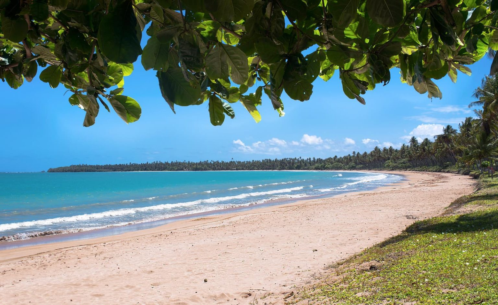

Praias do Brasil
O Brasil é um dos países tropicais conhecidos pelas praias mais bonitas do planets. Confira as melhores praias para esse verão.
Jericoacoara

Jericoacoara é uma praia localizada na vila homônima, no município de Jijoca de Jericoacoara, no estado do Ceará, no Brasil. Está localizada a 295 km a oeste da capital do estado, Fortaleza. Foi eleita em 1994 pelo jornal estadunidense The Washington Post uma das dez praias mais bonitas do planeta.Em 2014, foi eleita pelo Huffington Post a quarta melhor praia da Terra. É um dos locais mais frequentados por praticantes de windsurfe no país. A praia é parte integrante do Parque Nacional de Jericoacoara.
Atrações:
- Pedra Furada.
- Duna do Pôr do Sol.
- Igreja Nossa Senhora da Consolação.
- Serrote.
- Farol de Jaricoacoara.
- Campo das Dunas.
Garapuá

Localizada na Ilha de Tinharé, município de Cairu, apresenta um mar incrível com uma areia limpa e clara, muitos coqueiros e piscinas naturais que encantam toda a família. A praia possui formato de concha com 2 km de extensão, oferecendo infraestrutura para todos que buscam lazer e comodidade. Restaurantes e quiosques oferecem uma variedade de pratos brasileiros incríveis. A praia pode ser visitada por terra e por mar, sendo que, nesse segundo caso, os turistas podem dar um mergulho nas famosas piscinas naturais do local.
Atrações:
- Pescaria.
- Mergulho.
- Passeios de barco.
- Cultura local.
- Caminhadas e trilhas.
- Observação de aves.
Lençóis Maranhenses
Você sabia que há muitas praias brasileiras com água doce? E a prova são as lagoas dos Lençóis Maranhenses, muito visitadas por conta das inúmeras piscinas formadas pelas águas das chuvas. A praia é um verdadeiro cartão-postal cercada por grandes dunas de areia fininha, com água na temperatura ambiente, ideal para se mergulhar. O acesso a essa praia pode ser por Barreirinhas, Atins ou Santo Amaro. Mas quem prefere se aventurar, pode fazer a travessia pelo Parque Nacional dos Lençóis Maranhenses.
Atração:
- Dunas e Lagoas.
- Passeios de 4x4.
- Caminhadas.
- Pôr do Sol.
- Praias da região.
- Vila de Atins.
- Observação de Animais.
Farol
A Praia do Farol é considerada uma das mais lindas praias do Brasil.
Com uma enseada de águas cristalinas, está ao redor das montanhas de Mata Atlântica nativa e só pode ser acessada através dos passeios de barco em Arraial do Cabo.
Vale a pena fazer um tour pelas praias da cidade e desembarcar nesse paraíso preservado pela Marinha do Brasil.
Atração:
- Beleza Natural.
- Águas Calmas.
- Corais e Mergulho.
- Passeios de Barco.
- Culinária Local.
- Caminhadas e Trilha.
Pipa
No Rio Grande do Norte, a Praia da Baía dos Golfinhos é indicada para todos os estilos de turistas. O visitante pode dar um mergulho no mar ou relaxar na faixa de areia, fazer passeios de jardineira, buggy ou barco e ainda aproveitar o pôr do sol na Lagoa Guaraíras. O nome da praia já diz tudo. Quem estiver por lá visitando poderá ver lindos golfinhos nadando bem perto da faixa de areia. Uma dica é aguardar a maré baixar para se chegar a pé na praia.
Atração:
- Beleza Cênica.
- Praia do Amor.
- Observação de Golfinhos.
- Atividades Aquáticas.
- Caminhadas e Trilhas.
Porcos
A Baía dos Porcos é uma das praias brasileiras mais bonitas e que atrai o turismo o ano todo. É uma praia formada no meio do paredão de pedras, cercada por verde e por piscinas naturais acessíveis durante a maré baixa. Também é bem procurada para a prática de snorkel (com algumas restrições de preservação ambiental) e suas águas claras e esverdeadas permitem aos turistas vislumbrar as tartarugas locais. Para os amantes da natureza é possível admirara beleza do Morro dois Irmãos.
Atração:
- Visual do Morro Dois Irmãos.
- Mergulho e Snorkeling.
- Trilha de Acesso.
- Calma e Tranquilidade.
- Proximidade de Outras Praias.